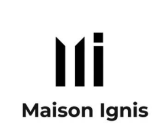
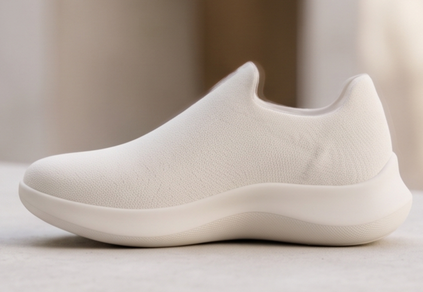
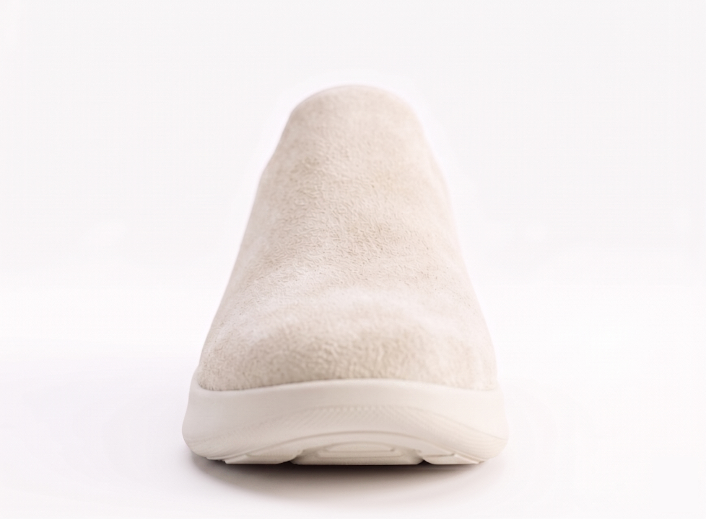
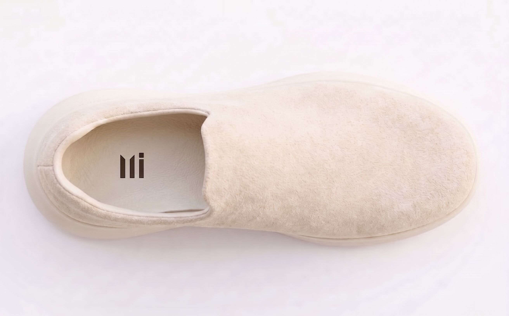
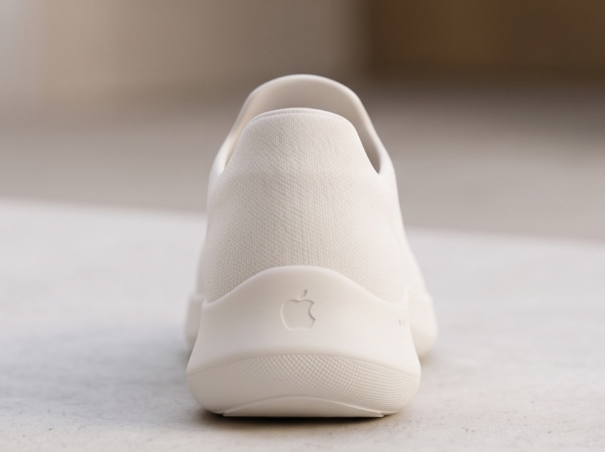
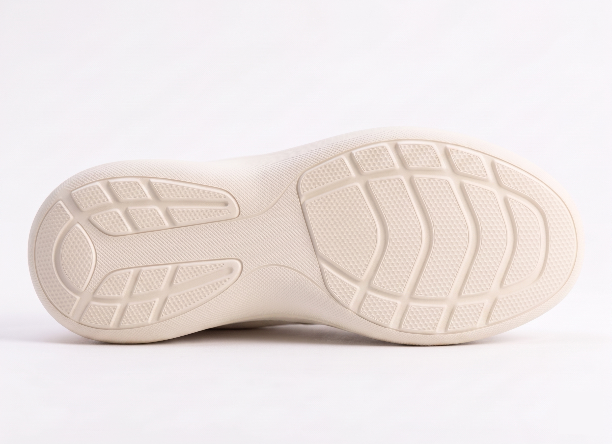

羊毛感上覆
用柔软触感降低技术产品的距离感，让冬季穿着更接近室内织物。

Maison Ignis JoinNordic thermal footwear / Maison Ignis 02
大幅产品渲染、雪白针织表面与克制发光 CTA，构成第一眼的产品惊艳： 像 Apple 式物件，又带有北欧冬季的柔和暖意。

Module 02 / 产品展示
高帮袜套鞋的侧面轮廓、柔和针织纹理、隐藏式加热层一起构成了 Maison Ignis 的产品语言：不像装备，更像一件温暖的日用品。
用柔软触感降低技术产品的距离感，让冬季穿着更接近室内织物。
以暖米色和石灰灰承接产品图片的柔光，避开廉价电商感。
细密纹理包裹脚背，视觉上保持纯净，同时暗示内部热管理。
Module 03 / 功能细节
文档要求的恒温加热、环境感应、穿着检测、无线充电，被整理成 极简功能节点。hover 时会显出说明，保持页面干净。
Module 04 / 使用场景
现有素材以产品为主，所以场景段落采用“摄影分镜卡”的方式搭建氛围： 暖光、雾面玻璃、城市雪色和轻微视差，让叙事继续向生活方式推进。

City street
Cafe morning
Dog walk
Snow commuteModule 05 / 用户体验感
它强调的是舒适、温暖、日常可穿。不是户外装备的硬朗姿态， 而是一双能进入公寓、电梯、咖啡馆和雪地街口的冬季鞋。
Module 06 / 价值主张
Module 07 / 邮箱收集
当前为前端原型，邮箱不会发送到服务器；后续可接入 Next.js API、 Google Analytics、Meta Pixel 和 UTM 追踪。